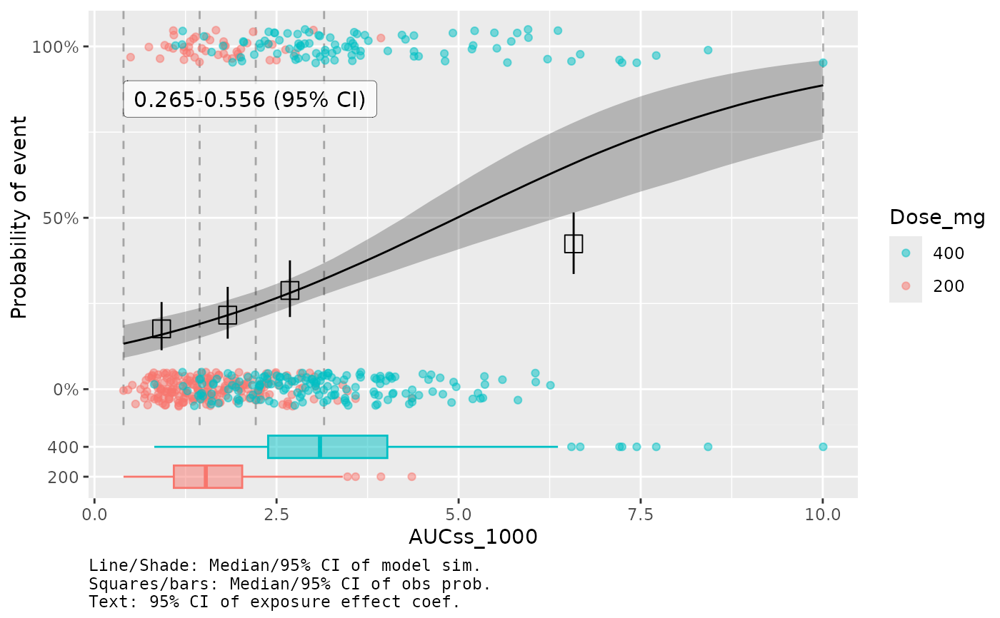

Default GOF plot for ER model
plot_er_gof.RdThis is a wrapper function for plot_er() with default options for
goodness-of-fit (GOF) plots for ER models.
Usage
plot_er_gof(
x,
add_boxplot = !is.null(var_group),
boxplot_height = 0.15,
show_boxplot_y_title = FALSE,
var_group = NULL,
n_bins = 4,
qi_width_obs = 0.95,
show_coef_exp = FALSE,
coef_pos_x = NULL,
coef_pos_y = NULL,
coef_size = 4,
qi_width_coef = 0.95,
qi_width_sim = 0.95,
show_caption = TRUE
)Arguments
- x
an object of class
ermod,ersim,ersim_med_qi, or their subclasses- add_boxplot
Logical, whether to add a boxplot of exposure values. Default is
TRUEifvar_groupis specified, otherwiseFALSE.- boxplot_height
Height of the boxplot relative to the main plot. Default is
0.15.- show_boxplot_y_title
Logical, whether to show the y-axis title for the boxplot. Default is
FALSE.- var_group
The column to use for grouping data for plotting. If specified, observed data points and boxplot will be grouped and colored by this column. Default is
NULL.- n_bins
Number of bins to use for observed probability summary. Only relevant for binary models. Default is
4.- qi_width_obs
Confidence level for the observed probability summary. Default is
0.95.- show_coef_exp
Logical, whether to show the credible interval of the exposure coefficient. Default is
FALSE. This is only available for linear and linear logistic regression models.- coef_pos_x
x-coordinate of the text label. If
NULL(default), it is set to the minimum value for the exposure variable.- coef_pos_y
y-coordinate of the text label. If
NULL(default), it is set to 0.9 for logistic regression models and the maximum value of the response variable in the original data for linear regression models.- coef_size
Size of the text label. Default is
4.- qi_width_coef
Width of the credible interval for the exposure coefficient. Default is
0.95.- qi_width_sim
Width of the quantile interval to summarize simulated draws. Default is
0.95.- show_caption
Logical, whether to show the caption note for the plot. Default is
TRUE.
Details
The following code will generate the same plot:
plot_er(
x,
show_orig_data = TRUE,
show_coef_exp = show_coef_exp,
show_caption = show_caption,
options_orig_data = list(
add_boxplot = add_boxplot, boxplot_height = boxplot_height,
show_boxplot_y_title = show_boxplot_y_title,
var_group = var_group,
n_bins = n_bins, qi_width = qi_width_obs
),
options_coef_exp = list(
qi_width = qi_width_coef, pos_x = coef_pos_x, pos_y = coef_pos_y,
size = coef_size
),
options_caption = list(
orig_data_summary = TRUE, coef_exp = show_coef_exp
),
qi_width_sim = qi_width_sim
)Examples
data(d_sim_binom_cov_hgly2)
ermod_bin <- dev_ermod_bin(
data = d_sim_binom_cov_hgly2,
var_resp = "AEFLAG",
var_exposure = "AUCss_1000"
)
plot_er_gof(ermod_bin, var_group = "Dose_mg", show_coef_exp = TRUE)
